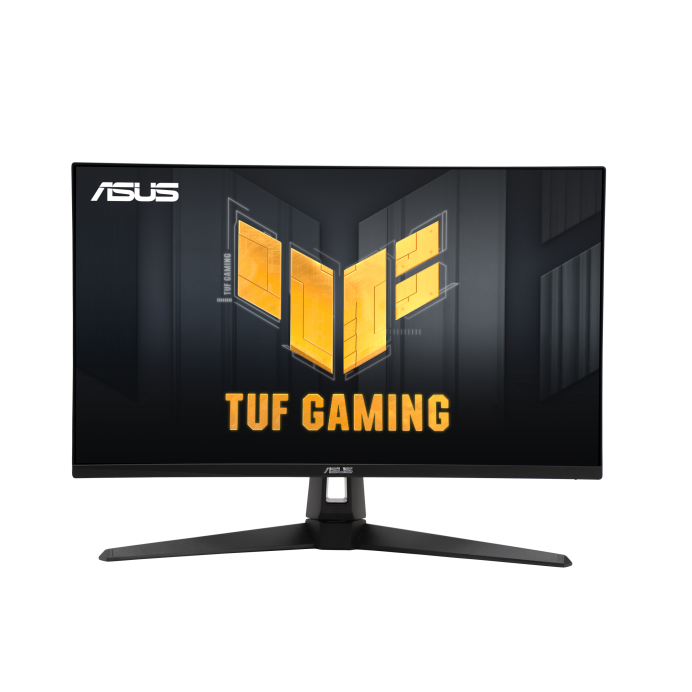

| Overview | ∣ | Specifications | ∣ | Where To Buy |
|
TUF Gaming VG27AQA1A Gaming overclock to 170Hz refresh rate designed for professional gamers and immersive gameplay ASUS Extreme Low Motion Blur (ELMB ™) technology to further reduce ghosting and motion blur gaming experience by enabling VRR (variable refresh rate) by default HDR-10 format to enhance bright and dark areas |  |